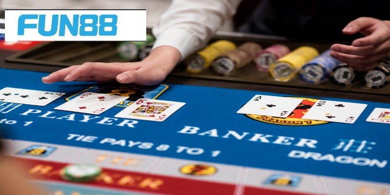

Baccarat Fun88 Và Những Lưu Ý Xương Máu Cho Anh Em
Baccarat Fun88: Chiến Thắng Với Bí Quyết Chơi Hiệu Quả
Baccarat Fun88 được chú trọng phát triển với nhiều ưu điểm đẳng cấp. Mọi người sẽ cảm thấy sảng khoái, vui vẻ khi khám phá trò chơi cá cược đỉnh cao này. Để có thể hiểu hơn về tựa game thì anh em hãy cùng tiến vào bài viết bên dưới đây.
Tổng quan về trò chơi xì dách FUN88
Đến với nhà cái Fun88, anh em sẽ được trải nghiệm rất nhiều tựa game huyền thoại, đình đám trên thế giới. Chúng ta có thể kể đến những trò chơi như Blackjack, Poker, Dragon Tiger,… Trong số đó, Baccarat thu hút được nhiều anh em hơn cả vì tính hấp dẫn cùng nhiều phiên bản khác nhau.

Mọi người tìm hiểu giới thiệu về trò chơi Baccarat
Trò chơi được nhà cái chú trọng xây dựng vô cùng nổi bật. Baccarat Fun88 mang nhiều thế mạnh:
Luật chơi Baccarat đơn giản dành cho người mới
Để có thể làm chủ được bộ môn Baccarat tạinhà cái Fun88 thì trước hết anh em phải nắm bắt được quy tắc chơi. Hãy cùng chuyên mục bên dưới đây tìm hiểu thêm về luật mà nền tảng đưa ra nhé:
Bộ bài và cách tính điểm
Nhà cái sẽ sử dụng từ 4 đến 8 bộ bài Tây 52 lá tiêu chuẩn. Để xác định được người thắng thua thì sẽ dựa trên quy tắc tính điểm. Vì vậy các quân bài sẽ được quy ước giá trị như sau:
Các cửa cược
Trò chơi Baccarat Fun88 sẽ bao gồm 3 cửa cược chính. Mọi người phải hiểu được ý nghĩa của chúng để khám phá bộ môn một cách tự tin:

Bet thủ cần ghi nhớ luật chơi Baccarat Fun88
Diễn biến ván chơi
Khi bắt đầu vào ván cược, anh em sẽ phải đặt tiền dự đoán xem cửa nào sẽ dành chiến thắng. Nhà cái sẽ cho bet thủ một thời gian nhất định để thực hiện hành động này.
Dealer của nhà cái sẽ tiến hành trộn và chia cho Player và Banker mỗi bên 2 lá. Các cửa sẽ có quyền rút thêm quân bài thứ 3 dựa vào từng tình huống. Bên nào có tổng điểm gần 9 nhất thì sẽ giành được chiến thắng.
Lúc này, người chơi nào dự đoán đúng cửa thì sẽ giành được món quà với tỷ lệ thưởng tương ứng. Website sẽ cộng thẳng tiền vào account game cho bet thủ. Tuy nhiên nếu ai đưa ra nhận định sai thì sẽ bị mất đi vốn đặt ở đầu ván bài.
Anh em học hỏi bí quyết chơi Baccarat tại Fun88 thắng lớn
Bộ môn Baccarat đòi hỏi game thủ phải có tư duy, khả năng logic cùng nhiều chiến thuật hay ho. Nắm bắt được nhu cầu học hỏi của mọi người, chuyên mục sẽ đưa ra những bí quyết từ chuyên gia:
Hạn chế đặt cược cửa hòa
Cửa hòa là nơi có tỷ lệ thưởng cao nhất – 1 ăn 8. Chính vì vậy mà nhiều bet thủ lựa chọn đặt cược để nhận về món quà giá trị của nền tảng.
Tuy nhiên tỷ lệ thưởng cao cũng đồng nghĩa với rủi ro lớn. Mọi người khi chơi nên hạn chế đặt cược cho cửa Tie. Như vậy bet thủ sẽ tiết kiệm được kha khá số tiền vốn và đưa ra được quyết định hợp lý hơn.
Nên bắt đầu với số vốn nhỏ
Nếu như anh em mới tham gia vào Baccarat Fun88 thì chỉ nên đặt cược với số vốn nhỏ lẻ mà thôi. Bằng cách này, hội viên sẽ có cơ hội thực chiến nhiều ván, tăng khả năng giành chiến thắng.

Kinh nghiệm chắc thắng bài xì dách từ dân cược chuyên nghiệp
Nghe theo lời khuyên của chuyên gia
Việc lắng nghe theo lời khuyên đặt cược của các chuyên gia cũng sẽ giúp bet thủ chiến thắng với Baccarat. Bởi những người này sở hữu nhiều kinh nghiệm, có thể đưa ra được dự đoán có độ chính xác cao.
Baccarat Fun88 đã được bài viết bên trên giới thiệu tổng quan cho bet thủ tham khảo. Trò chơi với những quy tắc đơn giản nên ai cũng có thể làm quen và khám phá, Tuy nhiên anh em phải học hỏi thật nhiều bí quyết để nâng cao cơ hội thắng của mình.